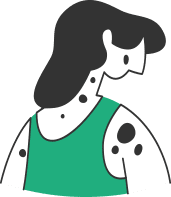

Проверь свои родинки
Врач-онколог высшей категории, онкохирург «СМ-Клиника»
Безвредная родинка или опасная болезнь?
Как отличить, выявить и удалить


С детства большинству из нас известно, что прямые солнечные лучи могут принести значительный вред здоровью. И речь идет не только об ожогах после загара, с которыми хотя бы раз сталкивались все «белоснежки», но и о риске получить злокачественные кожные заболевания – самый агрессивный вид рака кожи, меланому.
Именно поэтому специалисты советуют постоянно осматривать себя, замечая новые родинки или те, которые неожиданно поменяли цвет, начали расти, выглядят подозрительно. Особенно это актуально после сезона отпусков: когда жаркое лето закончилось, уделите время походу к дерматологу.
Профилактика злокачественных новообразований особенно важна для людей со светлой кожей, у которых случаются солнечные ожоги. Актуально это и для тех, у кого в роду есть злокачественные заболевания кожи. А также для обладателей большого числа родинок или невусов (что может говорить о более высокой чувствительности кожи к ультрафиолетовому излучению).
Какие родинки должны привлечь особое внимание
Дерматологи разработали несколько систем обследования родинок, которые помогут оценить, насколько они опасны. Чаще всего пользуются шкалами ABCD, GLASGOW и АККОРД.
Обследование невусов по системе АККОРД подразумевает сравнение нескольких признаков: на каждую заглавную букву в названии приходится свой симптом.
- А – асимметрия. Если через родинку провести мысленно линию, которая разделит ее пополам, части должны быть примерно одинаковыми. Асимметрия может говорить о патологических изменениях;
- К – край. Он должен быть ровным: изменения и утолщения сигнализируют о необходимости визита к специалисту;
- К – кровоточивость. Сочащиеся кровь или сукровица — опасный признак, требующий тщательно исследования;
- О – окраска. Если невус поменял цвет или в нем появились вкрапления, пора насторожиться;
- Р – размер. Резкое увеличение родинки может сообщать о кожных недугах;
- Д – динамика. Опасно, если поверхность невуса меняется, особенно стремительно.
Заметили один или несколько признаков? Поспешите обратиться к специалисту. Меланома может развиваться годами, а иногда перерождение происходит всего за несколько месяцев. За опасными невусами должен постоянно наблюдать дерматолог.
Почему защищать кожу важно всегда
Многие считают, что в холодном климате заботиться о защите кожи нужно лишь летом, но даже в холодные сезоны некоторые участки тела остаются открытыми и подвергаются воздействию солнечных лучей.
На защите нашей кожи от ультрафиолетового излучения стоят меланоциты, эти особые клетки находятся в глубине эпидермиса. Именно они вырабатывают меланин, который дарит коже темный оттенок. Чем больше в эпидермисе специальных клеток, тем надежнее защищен человек от ультрафиолета.
Дополнительно позаботиться о коже помогают специальные средства от солнца, их наносят на все тело во время загара и на открытые участки в любой сезон.
В зависимости от длины волны излучение от солнца делится на UVA и UVB: есть средства, которые защищают только от первых, есть те, которые создают барьер для вторых. И самая эффективная группа — продукты, защищающие от обоих видов излучения.
Чаще всего для защиты от солнца пользуются средствами с SPF (sun protection factor), они поглощают от 93 до 98% UVB-лучей, но не защищают от UVA-излучения. А именно оно отвечает за фотостарение и чаще приводит к образованию онкологических заболеваний кожи.
Поэтому стоит подбирать средства широкого спектра и помнить, что они не могут быть гарантией защиты от рака кожи.
Удаление родинок — волнительный вопрос
Стоит ли говорить о том, как опасны самостоятельные попытки избавиться от родинки? Срезать, сковырнуть, растворить или прижечь ее кислыми средствами — все эти способы могут очень серьезно навредить здоровью. Вы не можете быть уверены, что удалите все клетки невуса, зато такая травма легко запустит опасный процесс перерождения родинки в злокачественное образование.
Убирать родинки не стоит и в кабинете косметологов: эту операцию должны проводить специалисты! Именно врачи-дерматологи и онкодерматологи решают, какой невус требует удаления для безопасности и исключения риска перерождения его в рак.
Перед тем, как дать рекомендации, доктор внимательно изучает с помощью дерматоскопа невусы, оценивает их цвет, размер, состояние, а затем выносит вердикт. Иногда специалисты рекомендуют избавиться не только от родинки, вызвавшей дискомфорт, но и от тех, что находятся рядом с ней, если они расположены на травматичном участке.
Ведь если невусы то и дело подвергаются трению, пережимаются или сдавливаются, они могут начать перерождаться опухоль.
Когда операцию проводит онкодерматолог, можно не бояться, что вмешательство приведет к неприятным последствиям. После иссечения родинки ее отправят на изучение под микроскопом — гистологию, которая выявит, нет ли в тканях атипичных клеток.
Всегда ли нужно удалять родинки
Удаляют не только уже переродившиеся невусы, но и те, которые могут в будущем превратиться в опухоль. При этом бояться хирургического вмешательства не стоит: оно проходит быстро и безболезненно, но в несколько раз уменьшает риск появления онкологических заболеваний кожи.
Как происходит удаление
В зависимости от рекомендаций врача, родинку можно удалить с помощью небольшой хирургической операции. Но иногда используется замораживание невуса — криодеструкция, углекислотный лазер, радиохирургия или электрокоагуляция. Самым щадящим считается метод углекислотного лазера, не требующий длительной реабилитации. После замораживания могут остаться рубцы, если криодеструкция повредила нижние слои кожи. Да и «отпадет» при этом способе родинка не сразу — за ней придется следить около месяца, наблюдать и ухаживать за корочкой.
И все же выбор метода стоит доверить врачу: он назначит способ, зависящий от размера и местоположения родинки. Не опасайтесь боли: операция проводится под местной анестезией, а дискомфорт после нее не более ощутим, чем после похода к стоматологу.
Удалив родинку, специалист может порекомендовать вам защищать место, где она находилась с помощью специальной косметики, иначе там может возникнуть пигментация. В редких случаях после удаления онкодерматолог предлагает понаблюдать за травмированным участком кожи в клинике, чтобы удостовериться, что не возникло осложнений и новых образований.
Дерматоскопия: все рассмотреть внимательно
Раньше дерматологи осматривали родинку без специальных приборов, но сейчас для эффективного исследования используется дерматоскоп. Он увеличивает невус в десятки раз, чтобы врач мог рассмотреть мельчайшие детали и сделать максимально точный вывод. Конечно, чем опытнее врач, тем более точный диагноз после осмотра он поставит.
В современных клиниках дерматоскоп подключается к компьютеру и выводит изображение на экран. Этот вариант исследования называется фотодерматоскопией
С его помощью точность результата достигает 97%, то есть ошибка исключается почти полностью. Кроме того, можно сохранять и распечатывать снимки невусов, чтобы наблюдать за их динамикой и отслеживать необходимость дополнительных мер.
Врач-дерматолог, миколог «СМ-Клиника»
специалистом